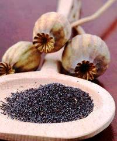

Hanklich ist eine
Art Hefekuchen, den man nur in Siebenbürgen kennt, sagen die
Siebenbürger SächsInnen, die den einfachen Bienenstich noch nicht
kennen. Dabei handelt
es sich zugleich um die Grundlage für den uralten Striezel, der
von den Ungarn als Stricli (sprich Stritzli) bezeichnet aus den Hanklichresten zubereitet
und über das Lagerfeuer gegrillt zum Baumstriezel wird, wie das nächste Rezept
zeigt. Die hier gezeigte Variante von Hanklich mit dem üppigen
Belag gilt als vornehm, allerdings zur Siedlungszeit im 12.
Jahrhundert konnte man sich sowas nur einmal
im Leben leisten - daher die Bezeichnung Hochzeitshanklich. Obwohl
Hanklich heute im ganzen Jahr gebacken wird, zeigen wir sie unter den
Weihnachtsspezialitäten, weil aus den Hanklichresten gemachte
Baumstriezel seit der politischen Wende ab 1989 als eine aus
Siebenbürgen stammende Kolatsche bzw. Kalács unter der Bezeichnung
Kürtőskalács heute bei den Ungarn als
eigene Spezialität zu Weihnachtszeit gepriesen wird. Mal sehen,
wie die Rumänen darüber denken...
Hanklich ist ein Armutszeichen aus der Gründungszeit nach der
Besiedlung des östlichen Karpatenbeckens durch deutschsprachige Einwanderer,
die den Ruf der ungarischen Könige Geisa II. und Andreas II seit
Mitte des 12. Jahrhunderts ins damals noch menschenleere
Siebenbürger Land folgten. Es gilt das Motto: billiger und
trotzdem festlich geht es nicht.
Zutaten: 1 Hefewürfel oder Pkg. Trockenhefe, 500
ml Milch, 6 Eier, 200 g Fett oder zerlassene Butter, 20 g Zibeben
(in Norddeutschland: Rosinen), 2 kg Mehl, Salz.
Zutaten für den Guß: 5 dl Rahm, 6 Eier oder: 12 Eier, 1
kg Fett oder Butter, Salz.
Zubereitung:
Man rührt mit der in 100 ml lauwarmer Milch aufgelösten Hefe und
dem Mehl ein Hefestück an, salzt es und läßt es aufgehen. Dann
mischt man es in das gesiebte warme Mehl, quirlt die Eier mit der
warmen Butter und der Milch und verrührt alles mit dem
aufgegangenen Sauerteig und dem Mehl zu einem glatten Teig, den
man gut verarbeitet und schlägt, bis er starke Blasen bildet. Man
läßt ihn dann an einem warmen Ort etwa 30 Minuten lang aufgehen.
Der Teig wird nun auf einem mit Mehl bestreuten Tischtuch
ausgewalkt…
Die
Hanklich wird sehr dünn aufs Blech gerollt, nachdem sie ordentlich
geknetet wurde und sehr gut gegangen ist! Noch im Backofen
mit dem Guß bestreichen, noch heiß mit Puderzucker bestreuen und warten, bis er schmilzt.
Dann
teilt man ihn in etwa 9 Platten, die man mit dem Finger oder einem
Kochlöffelstiel voneinander abteilt und mit einem heißen Messer
schneidet. Nun hebt man sie auf den Backofenschieber und schiebt
sie sorgfältig in den Backofen, wo sie nur 10-15 Minuten lang
backen sollen, bis der Guß goldbraun ist.
Siebenbürger Baumstriezel
/ Kürtőskalács
Bei der oben beschriebenen Hanklich handelt
es sich um die Grundlage für den uralten Baumstriezel,
den die Ungarn seit der Vertreibung der Siebenbürger Sachsen aus
ihrer Heimat nach der sog. politischen Wende im Jahre 1989 als ihr
eigenes Kürtőskalács betrachten – neulich sogar die Rumänen
- und höre und staune, die Slowaken auch.
In Ermangelung eigener Küchenprodukte erklärten
Ende 2015 die Rumänen, wie
sich die Walachen seit 1863 bezeichnen, Kürtőskalács
unter der Bezeichnung Colac secuiesc oder Cozonac
secuiesc sei ihr
eigenes "Nationalprodukt". Spannend wird die
Baumstriezel-Geschichte nun dadurch, dass die Ungarn mit ihrem Kürtőskalács
nur einen Tag später mit "Hungaricum" gebranndmarkt um
EU-Markenschutz apellierten in Brüssel. Aber die Brüsseler
Bürokraten haben z.Zt. eigene Existenzsorgen und sind nach unseren
Erkenntnissen bisher noch nicht zu einer Entscheidung gekommen.
Sie können auch nicht entscheiden, weil keiner unter ihnen je
eigene Fehlentscheidungen zuzugeben bereit war. Sie haben nämlich
schon im Jahre 2007 einiges übersehen und den Baumstriezel unter
der Bezeichnung Trdelnik als slowakischen Kuchen unter
EU-Namensschutz gestellt. Dabei haben sie sich täuschen lassen von
den nach eigener Identität strebenden Slowaken, die bisher kein
einziges Küchenprodukt als ihr eigenes bezeichnen können - nicht
einmal Strapacka, das nur mit rumänischen Brinzakäse zubereitet
als echt gilt und bei den rumänischen Hochgebirgsschäfern ihr
"Strapacka" seit Jahrhunderten als ein rumänisches Alltagsgericht
bekannt ist. Beim Trdelnik handelt es sich um den Kürtőskalács
bzw. Baumstriezel, dessen Rezept im 18. Jahrhundert nachweislich
von einem ungarischen Koch, der den Ruf des ungarischen Grafen
Gvadányi gefolgt, innerhalb von Ungarn, aus Siebenbürgen in den
östlichen Karpaten nach Szakolca (ca. 40 km nördlich von
Bratislava), heute Skalica in der Slowakei mitgebracht wurde.
Damals hieß die Stadt Bratislava noch Pozsony, hatte eine
ungarischsprachige Bevölkerung und war insgesamt 300 Jahre lang
die Hauptstadt von Ungarn - und Kürtőskalács
war zu damaligen Zeiten schon rd. 500 Jahre bekannt in
Siebenbürgen. Wer die deutsche
Politik in Berlin kennt, wundert sich überhaupt nicht, wenn
dort
niemand sich um den Baumstriezel der Siebenbürger Sachsen kümmert.
Früher kaum bekannt im heutigen Ungarn, seit der vollständigen
Grenzöffnung zwischen Ungarn und Rumänien erobern die
Kürtőskalács-Stände die
Weihnachtsmärkte im Westen. Der Teig
ist die oben beschriebene Hanklich, ursprünglich aus Ei und Milch
geknetet, aber diese Bestandteile wurden von den Brüsseler
Bürokraten verboten für die Verwendung im Handel und an den Jahrmärkten. Zuhause
oder in Konditoreien spricht jedoch
nichts gegen den besseren Geschmack nach alter Tradition.
Nachdem die arbeitsfähigen Siebenbürger Sachsen aus ihrer Heimat vom
rumänischen Diktator Ceauşescu weitgehend vertrieben und vom
Außenminister H.D. Genscher für bis zu 20.000 DM Kopfgeld aufgekauft wurden, behaupten nun die
Sekler (Ungarisch sprechender Volksstamm in Siebenbürgen), der Siebenbürger Baumstriezel wäre ihre
Erfindung.
In der Tat erschien im Jahre 1784
von einer Frau Mikesch geschrieben ein Kochbuch, in dem das
Rezept von Kürtőskalács zum
ersten Male auf Ungarisch schriftlich dokumentiert
wurde. Aber der Baumkuchen war damals schon rd. 500 Jahre
lang bekannt und wurde von namhaften Personen, wie z.B von
Martin Luther in seiner Jugend im späten 15. Jahrhundert vergöttlicht.
In ungarischen Touristenwerbung
werden laufend neue Geschichten erfunden. Magisch klingt schon
demnach die Behauptung
der Sekler, der
Ursprung des ungarischen Kürtőskalács
sei im südlichen Siebenbürgen bei Kronstadt (heute Braşov)
gewesen, die bis 1920 schon lange auf der ungarischen Landeskarte
zu finden war, aber die Bevölkerung bis Ceauşescus Menschenhandel
mit dem deutschen Außenminister H.-D. Genscher nahezu
100%ig deutschstämmig war.
Eine weitere "Legende"
soll den
Zeitpunkt der Erfindung von Kürtőskalács bei Kronstadt während
des Tatarensturmes im Jahre 1240 belegen. allerdings stimmt
dieser Zeitpunkt mit der
massenhaften Ansiedlung der Siebenbürger Sachsen überein, die den Ruf des
ungarischen Königs Andreas II in den Jahren ab 1211 folgten.
Kronstadt blieb noch lange deutschsprachig, etwa bis zur Vertreibung
bzw. Ausverkauf durch den rumänischen
Diktator Ceauşescu. - Fakt ist jedoch, dass die
ungarnstämmigen Sekler für die neuzeitliche Verbreitung von Kürtőskalács
verantwortlich sind, wie z.B. in
Berlin. Fakt ist auch, dass das erste Rezeptbuch
aus dem Jahr 1784, in dem Kürtőskalács
vorkommt, von der Frau Mikesch - einer Ungarin - geschrieben, von
einem damals schon allgemein bekannten Hausrezept berichtet.
Übrigens:
Das ungarische Wort Kürtőskalács
schreibt man mit einem ő (langes Ő, zwei
Striche statt zwei Punkte, sog. Doppelakzent) und das ist
wichtig. Mit kurzem Ö würde das Wort etwas anderes bedeuten
(Kürtös heißt hornig oder vom Horn). Kürtő bedeutet
Schornstein im Altungarischen und das Wort wird in manchen
Gegenden auch heute noch sinngemäß benutzt. Die
Ungarndeutschen bezeichnen diesen Kuchen als
Baumkuchen oder Baumstriezel,
Ungarn auf den Jahrmärkten etikettieren den Baumstriezel als
Schlotkuchen, Kaminkuchen u.a. Es gibt
laufend neue Wörter, die von meist ungebildeten Marktbudenbetreibern ohne
Deutschkenntnisse aus Wörterbüchern zusammengebastelt werden.
Zutaten für den
Hanklichteig
entnehmen Sie bitte aus dem Rezept für Hanklich oben. Zutaten für den Belagstreu:
unterschiedliche Mischung von Zucker, Orangeat, Zimt, Mandel-,
Cocos- und Walnußraspeln.
Zubereitung: Der Baumstriezel bzw. die Kürtőskalács
wird aus den Resten für Hanklich - oben beschriebenes Rezept -
auf einem hölzernen Spieß aufgewickelt im Freien bei Gluthitze
über das gerade erloschene Lagerfeuer gebacken. Zuerst wird nach Gefühl nicht ganz fertig gebacken, dann in einem
traditionellen Belagstreu gewendet
und so fertiggebacken, dass der Guß nicht ganz zehflüssig auf dem
Striezel kleben bleibt - wie bei allen Baumkuchen.
Das im folgenden Video geheimnisvoll hochgepriesene Spezialmehl erhält man
in den Geschäften als Spätzlemehl und wo es nicht erhältlich
ist, mischt man das selbst zusammen aus dem
handelsüblichen Mehl und bis zu 50%igem Anteil von
Hartweizengrieß. -
Das
folgende Video demonstriert die Zubereitung:
Servieren: Der Baumstriezel schmeckt nur
warm.
Unser Tipp: wir
haben in einem aus der Mode gekommenen Hähnchengrill an der
Stelle des Gockels zwei Coladosen aufgespießt und diese mit
Alufolie umwickelt, die man ein wenig einfetten sollte.
Baumkuchen / Kürtőskalács
Der jüdische
Weihnachtsmann pfeift auf christliche Traditionen und
verkauft bereits im Sommer diverse christl.
Weihnachtsartikel in Nordamerika schon lange, z.B. bei Loblaws oder Walmart.
Aldi und Schwarzmarkt (Lidl) haben diesen christlichen Traditionsbruch in
Deutschland schon lange eingeführt, vor einigen Jahren erreichte
diese Unsitte auch Ungarn bei Tesco, Auchan, Aldi, Lidl und
Co.
Der Baumkuchen ist weitgehend bekannt in
Deutschland, so verzichten wir hier auf die Wiedergabe einer
Rezeptur. Beim ungarischen Kürtőskalács handelt es sich in der Tat
um eine einfache Billigvariante (aus
Hefeteig, belegt mit Zucker, Zimt u.ä.) des aus wertvollen Zutaten
(Marzipan, Butter, Schokolade, Rum u.a.) arbeitsintensiv
zubereiteten Baumkuchens.
Beugen bzw. Wiener
Stollen / Beigli
Eine echte Kalorienbombe, die von den Donauschwaben
traditionell zu Weihnachten und Ostern aufgetischt wird
und immer mehr auch bei den Ungarn auf den
Weihnachtstisch gehört. Das Wort Beigli ist
donauschwäbisch und entstammt aus Beugen, das im 19.
Jahrhundert noch allgemein gebräuchlich für Kuchen war.
Beigli ist identisch mit dem Wiener Weihnachtsstollen,
der dort unter verschiedenen Namen bezeichnet und oft
mit einer Schokoladenlasur überzogen wird.
Während die österreichische Weihnachtsstolle
unterschiedlich gefüllt werden kann in Anlehnung an die
Nürnberger und Dresdner Stollen bzw. Striezel, in Ungarn
kommen grundsätzlich Mohn oder Walnuss, gelegentlich
auch Kakao in Frage. Die Füllung wird meistens mit
Rosinen und Aprikosenmarmelade bereichert, neulich
machen Marzipanflocken die Runde. In Ungarn ist die
Oberflächenbeschichtung immer eine Eierlasur.
Übrigens: Der Wiener Beugen hat mit Beigel oder
Bagel (gelochter Berliner bzw. doughnut) schlesischen
Ursprungs nichts zu tun,
trotz andersartiger Behauptungen der deutschsprachigen
Ausgabe von Wissenspantscher Wikipedia.
Zutaten für 4 bis 6
Stollen: 600 g Strudelmehl, 250 g Butter oder
Margarin (es reicht auch die Hälfte, dann wird der
Teig luftig-locker-leichter nach dem Backvorgang), 150
g Zucker, 2 Eier, 1 Hefewürfel, 0,2 l Sauerrahm oder
Schmand, 1/2 TL Salz.
Zutaten für die Mohnfüllung: 400 g
weichgemahlener Mohn (in Geschäften bekommt man nur
geknackte Mohnkörner, daher selbst mahlen! - über Mohn
und Opiate lesen Sie
hier), 200
g Zucker, soviel Wasser, dass die Mischung
streichfähig ist. Wenn man die Füllmasse mit
Aprikosenmarmelade anreichert, sollte man weniger
Zucker verwenden.
Zutaten für die Walnussfüllung: 400 g gemahlene
Walnüsse, 200 g Zucker, soviel Wasser, dass die
Mischung streichfähig ist, 1 handvoll Rosinen, 2-3
Stamperl Rum oder 1-2 Ampullen Rumaroma.
Zutaten für die Glasur:
Das Eigelb von 2 Eiern.

Die Zubereitung von Beigli
demonstriert das folgende Video:
Zubereitung: Oben
genannte
Zutaten für den Teig mit soviel Sauerrahm verkneten, dass der
Teig hart wird. In 4 bis 6 Stücke teilen, an einer
lauwarmen Stelle eine Stunde lang zugedeckt aufgehen lassen.
Auf dem Knetbrett backblechlange rechteckige Stücke
ausbreiten, füllen, aufrollen und auf dem Backblech
nebeneinander anordnen. Zwischen den Stollen sollte ein
Zwischenraum bleiben, weil sie im Backofen aufgehen. In dem
auf 180°C vorgewärmten Backofen max. 40 Minuten lang, im nicht
vorgewärmten Elektroofen ca. 50 Minuten lang backen.
Das Rezept der Wiener Stolle bzw. Beigli stammt
bekanntlich aus Österreich und so
ist es kein Wunder, wenn auch die Polen das Rezept vom
Erzgebirge ausgehend über Schlesien
hinweg im ganzen Land kennen. Die Zubereitung aller Rezepte variiert von
Haus zu Haus, so sieht die unten vorgeführte polnische
Variante ein bisschen anders aus. Das Video unten zeigt zudem, wie man Beigli
auch ohne Nussmühle (Bild links) und Mohnmühle (Bild rechts)
zubereiten kann.
In der Füllung der polnischen
Variante vermissen wir den frisch gemahlenen Geschmack der
Mohnkörner und das in Ungarn beliebte Aprikosenmus oder die
Marmelade!
Wir zeigen das folgende Video, weil es eine sehr gute
Demonstration der Herstellung von Beigli in Deutscher Sprache
ist. Manche behaupten, nach dem Kochen sei der Mohn
bekömmlicher und wer Milch meidet,
kann den Mohn genauso im Wasser kochen. Das mag stimmen, aber
der wahre Grund für das Kochen ist, dass der Mohn nur frisch
geerntet (etwa Ende August) bis Weihnachten schmeckt und
spätestens 6 Monate nach der Ernte fadig wird. So
schmeckt der Mohnstollen zu Weinachten ideal, aber zu Ostern
ist die Frische schon verflogen und seine Eignung zum Genießen
im gemahlenen Zustand ist dann kritisch. Das Kochen
kommt der industriellen Verwertung entgegen und verlängert die
Haltbarkeit von Blaumohn - zumindest scheinbar. Während der
natürlichen Austrocknung der Mohnkörner vergeht zwar der
Mohngeschmack, kann aber durch die aufgesogene Kochflüssigkeit
etwas wiederbelebt werden kann. Dem gleichen Zweck dient die
Zugabe von Eiweißschnee in der polnischen Mohnfüllung, wie im
folgenden Video:
In den nordöstlichen Landesteilen von Ungarn kennt man
in ländlichen Gegenden eine anderswo unbekannte Variante des
Mohnstollens. Drei Stangen werden in einen Zopf aufgewickelt und
in einem Keramikgefäß im Steinofen gebacken.
Christstollen
/ Krisztuskalács
Als die Alphabetisierung im späten Mittelalter begann, holten
sich die Siebenbürger Sachsen ihre Deutschlehrer laufend aus
der Dresdner Umgebung und dachten angesicht der gleichen
Sprache, sie selbst wären Sachsen. Später stellte sich heraus,
dass ihre Vorfahren einst in überwiegendem Anteil als Moselfranken in das damals
zur 11./12. Jahrhundertwende noch menschenleere
Siebenbürgen zur Urbarmachung königlicher Ländereien und zum
Steuerzahlen nach Ungarn gelockt waren. Mit der Aufdeckung
ihrer Herkunft durch gentechnische Untersuchungen änderte sich jedoch nicht, dass sie von ihren
Lehrern sächsische Gepflogenheiten erlernten und diese als
ihre eigene deutsche Tradition betrachten. Dazu gehört schon
seit eh und je der Christstollen nach Dresdner Art zur
Weihnachtszeit.
In letzter Zeit breitet sich die
Nachfrage nach
Christstollen in Ungarn aus und wir präsentieren aus diesem
Grund das Grundrezept dazu. Im folgenden Video wird dieser Stollen in seiner einfachsten Form zum Nachmachen
vorgeführt. Die Zutaten und Beschreibung der Zubereitung zur Fortentwicklung von KüchenmeisterInnen sehen Sie unter dem Video:
Zutaten -
reichhaltig nach Dresdner Muster, dadurch abweichend vom
Video: 500
g Weizenmehl, 1 Hefewürfel oder 1 Pkg. Trockenhefe, 80 g
Zucker, 150 ml Milch, 150 g Butter,
50 g Schweineschmalz, 1 Ei, 1 Prise Salz, 100 g
Rosinen,
120 g Korinthen, 100 g gehackte Mandeln, 50 g Orangeat, 50 g
Zitronat, 2 Msp. Muskatnuß, 2 Msp. Kardamon, 2 Msp. Zimt, 200
g Marzipan zerkleinert. -
Zum Bepinseln und Besteuben: 80 g heiße Butter,
1 Pkg. Vanillezucker und 1 EL Puder- bzw. Staubzucker.
Zubereitungstipps:
Die
schweren Zutaten Rosinen, Korinthen, Mandeln und Marzipan
sollte man erst beim letzten Kneten untermischen.
Die Verwendung
von Trockenhefe erspart die Vorsichtsmaßnahmen mit Hefe und
Salz, die im Video
ausführlich erklärt werden, zudem wird der erste Hefegang
überflüssig.
Das Kneten mit der Hand geht bei
haushaltüblichen Mengen bis zu 3 Stollen leichter und
schneller als mit der Knetmaschine, deren Reinigung allein
mehr Zeit benötigt, als das Kneten mit der Hand.
Zubereitung gemäß Video:
Mehl, Trockenhefe, Butter, Salz
und warme Milch in einer Schüssel zu einem festeren Teig
verrühren und an einer warmen Stelle aufbewahren.
Die Füll-Zutaten zerkleinern,
über den ausgebreiteten Teig verteilen und in den Teig
mischen.
Den Stollenteig an einer warmen
Stelle gehen lassen, bis er auf die doppelte Größe wächst.
Den Teig kurz kneten und - wie im
Video gezeigt - in überklappter Form bringen, dabei darauf
achten, dass die Füll-Leckereien möglichst nicht aus der
Teigoberfläche herausragen, ansonsten würden sie anbrennen
beim Backen.
Im vorgewärmten Backofen bei
Unter- und Oberhitze 45 bis 60 Minuten lang backen bei
175°C.
Nach dem Backen mit heißer Butter
einstreichen, mit Staubzucker bepudern, in Alufolie
wickeln und darin auskühlen lassen, damit die Feuchtigkeit
im stollen bleibt.
Nach dem Servieren den Rest immer
in Alufolie lagern, damit der Stollen nicht austrocknet.
Eierpfannkuchen mit Zimt
Zimt-Palatschinken gehören zu den katholischen
Weihnachtstraditionen der Donauschwaben, indem man mit Zimt
und Zucker oder Vanillezucker bestreute Pfannkuchen als
Dessert serviert.
Sie
wollen endlich mal ein Gulasch nach
Originalrezept in Budapest genießen. Dann nichts wie hin.
Das Essen in Ungarn ist fett und schwer, damit muss man einfach
rechnen, wenn man in Ungarn einen Urlaub macht.
Zur
ungarischen Küche
gehört nun mal das Schmalz. Als
Geschmacksträger
bringt es die Zwiebeln und den Paprika zur Geltung. Es ist viel gesünder, als sogenannte
Ernährungsberater in Deutschland denken, denn
der Mensch kann die genetisch vorhandene Abwehrkraft
gegen den Krebs nur durch fettes Essen und viel Bewegung
stärken.
Angeblich hilft auch Vitamin C gegen Krebs, aber geheilt ist dadurch noch
niemand, zumindest nicht nachweislich.
Niemand sagt, dass man viel essen muss!


 Sie
wollen endlich mal ein Gulasch nach
Originalrezept in Budapest genießen. Dann nichts wie hin.
Sie
wollen endlich mal ein Gulasch nach
Originalrezept in Budapest genießen. Dann nichts wie hin.